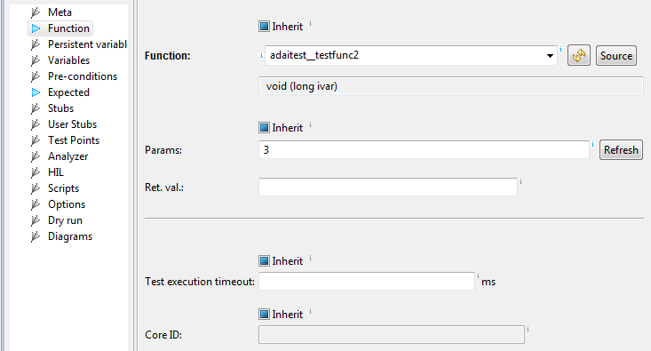
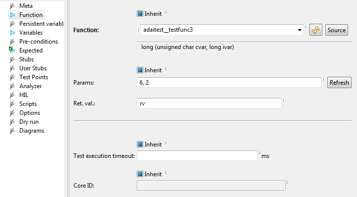
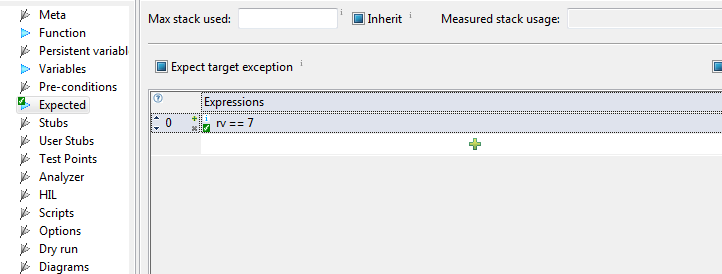
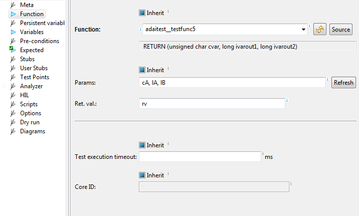
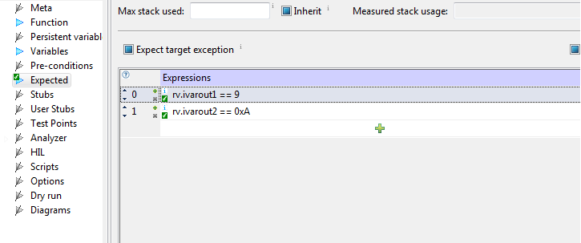
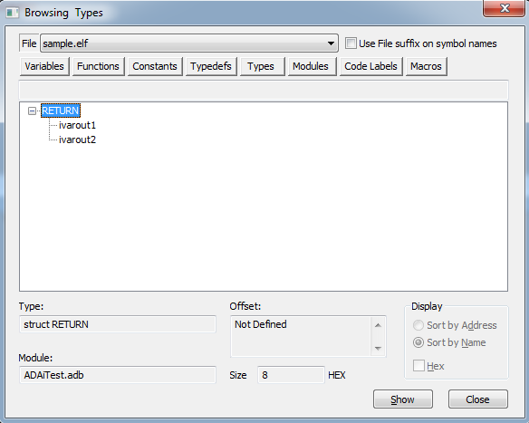

ADA procedure:
procedure testFunc2(iVar : in INTEGER);
is equivalent to C function:
void testFunc2(int iVar);
To test this function in testIDEA you don't have to know C
conversion because it is automatically displayed below the
selected function, as shown in the image below (if this is not the
case, click the Refresh button):

Please note that the name of the function is nottestFunc2() but adaitest_testfunc2()
where adaitest is the name of the package
where testFunc2() is located. Function and variable
names may be changed (upper to lower case) depending on the
compiler that you are using, and it is important to use the names
as specified by the compiler.
Ret. val. in testIDEA. For example, ADA
procedure:
procedure testFunc3(cVar : in CHARACTER; iVar : out INTEGER);
is equivalent to C function:
int testFunc3(char cVar, int iVar)
Note that parameter ivar will be passed into function
as parameter and returned as return value stored in testIDEA
variable rv.


If procedure uses more than one output parameter, than all out parameters are packed into a structure and returned as return value. For example, ADA procedure:
procedure testFunc5(cVar : in CHARACTER; iVarOut1 : out INTEGER; iVarOut2 : out INTEGER);
has two out parameters.

To correctly evaluate out parametersivarout1
and ivarout2 you have to evaluate them as members
of a structure, which is created by compiler:

In this case compiler generated a type RETURN. To see how this data type is composed, go to winIDEA symbols view: